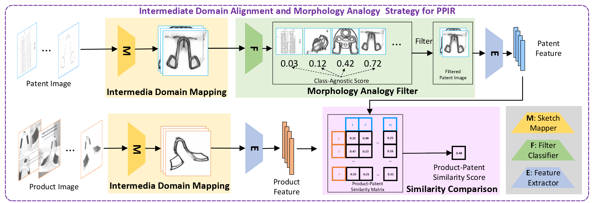

Intermediate Domain Alignment and Morphology Analogy for Patent-Product Image Retrieval
NeurIPS 2025
Haifan Gong1,2 † Xuanye Zhang1,2 † Ruifei Zhang1,2 Yun Su3 Zhuo Li1,2 Yuhao Du1,2 Anningzhe Gao2 Xiang Wan1,2* Haofeng Li4,2*
†These two authors contributed equally to this work.
*Corresponding authors. Email: wanxiang@sribd.cn, lihf95@mail.sysu.edu.cn
1The Chinese University of Hong Kong, Shenzhen 2Shenzhen Research Institute of Big Data 3University of Waterloo 4School of Systems Science and Engineering, Sun Yat-sen University

Introduction
Recent advances in artificial intelligence have significantly impacted image retrieval tasks, yet Patent-Product Image Retrieval (PPIR) has received limited attention. PPIR retrieves patent images from product images to identify potential infringements and presents two major challenges: (1) both product and patent images contain many categories of artificial objects, while models pre-trained on standard datasets have limited discriminative power on unseen objects; and (2) the large domain gap between binary patent line drawings and colorful RGB product images makes similarity comparison difficult.
We formulate PPIR as an open-set image retrieval task and introduce the Patent-Product Image Retrieval Dataset (PPIRD), together with Intermediate Domain Alignment and Morphology Analogy (IDAMA). IDAMA maps both image types to an intermediate sketch domain via edge detection to reduce domain discrepancy, and applies a Morphology Analogy Filter (MAF) to select discriminative patent images through analogical reasoning over visual features. On PPIRD, IDAMA significantly outperforms strong baselines (+7.58 mAR) and provides insights into domain mapping and representation learning for PPIR.
Method: IDAMA
Intermediate Domain Mapping (IDM). Binary line-drawing patent images and colorful RGB product images are aligned by mapping both into an intermediate sketch domain using an edge detector. Theoretical analysis in the paper shows that this mapping mitigates cross-domain discrepancy and improves retrieval accuracy.
Morphology Analogy Filter (MAF). Inspired by the cognitive principle that an unknown object can be described by analogy to a known one, MAF uses high classification confidence (regardless of predicted label) to select discriminative patent images for similarity comparison. By focusing on visually distinctive patents—including unseen artificial objects—MAF improves open-set retrieval for PPIR.
Dataset: PPIRD

PPIRD is designed to reflect real-world patent infringement search, where the gallery contains patents not seen during training. The benchmark and pre-training resources are released on Hugging Face (haifan-gong/IDAMA).
| Split / Component | Description | Scale |
|---|---|---|
| Test queries | Product–patent pairs with infringement annotations; each pair includes detailed product descriptions for verification. | 439 pairs |
| Retrieval gallery | Patent images used as the open-set retrieval pool at test time. | 727,921 images |
| Unlabeled pre-training set | Large-scale product and patent images for self-supervised / representation learning, including edge-domain variants used by IDAMA. | 3,799,695 images |
Task protocol. Given a product image query, the model ranks patent images in the gallery. Correct matches are the annotated infringing patents for that product. Methods are evaluated under the open-set setting: gallery patents are not assumed to be seen during training.
Annotation note. Verified product–patent infringement pairs require extensive product metadata and legal review; this careful curation limits the size of the labeled test set but improves benchmark reliability.
Release contents on Hugging Face. PPIRD data splits, test benchmark metadata, pre-training images, pretrained backbones, edge-detector checkpoints, and evaluation assets used in the paper.
Code
Official implementation: github.com/haifangong/IDAMA. The repository includes intermediate-domain preprocessing (edge extraction), feature extraction, retrieval inference, and pre-training scripts (MAE / Swin / iBOT). Download data and model weights from haifan-gong/IDAMA and follow the README for reproduction.
Publication
Published in Advances in Neural Information Processing Systems 38 (NeurIPS 2025). | NeurIPS Proceedings | Paper PDF | OpenReview | GitHub | Hugging Face (Dataset & Models)
If you find our work useful, please consider citing:
@inproceedings{gong2025intermediate,
title = {Intermediate Domain Alignment and Morphology Analogy for Patent-Product Image Retrieval},
author = {Gong, Haifan and Zhang, Xuanye and Zhang, Ruifei and Su, Yun and Li, Zhuo and Du, Yuhao and Gao, Anningzhe and Wan, Xiang and Li, Haofeng},
booktitle = {Advances in Neural Information Processing Systems},
volume = {38},
year = {2025},
url = {https://papers.nips.cc/paper_files/paper/2025/hash/154743e7e9688cf77db5ee75807bda82-Abstract-Conference.html}
}